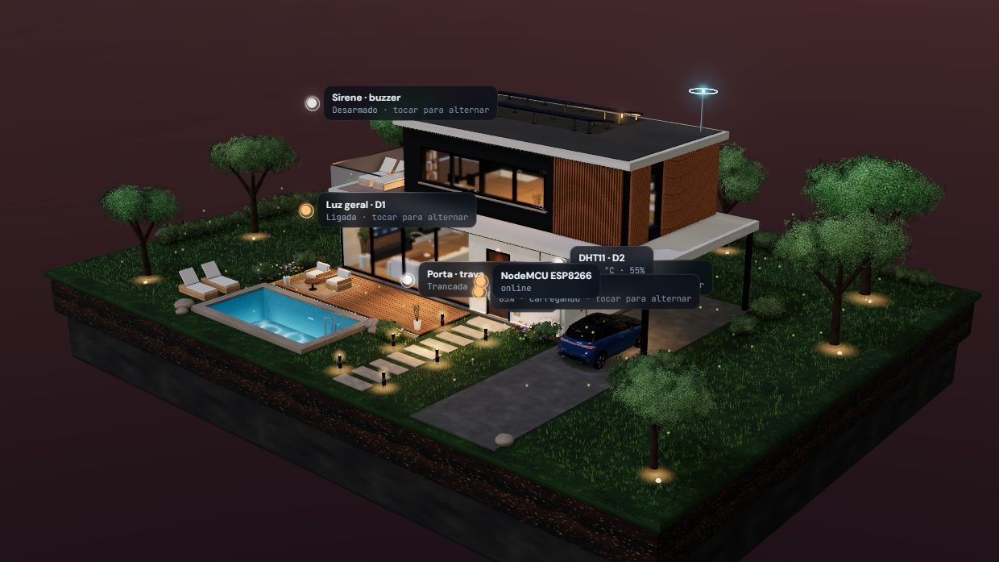
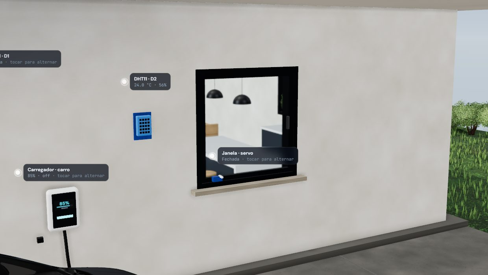
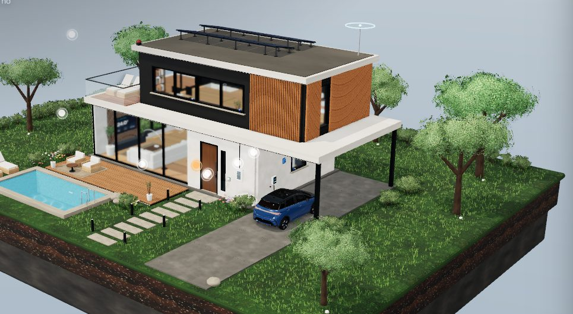
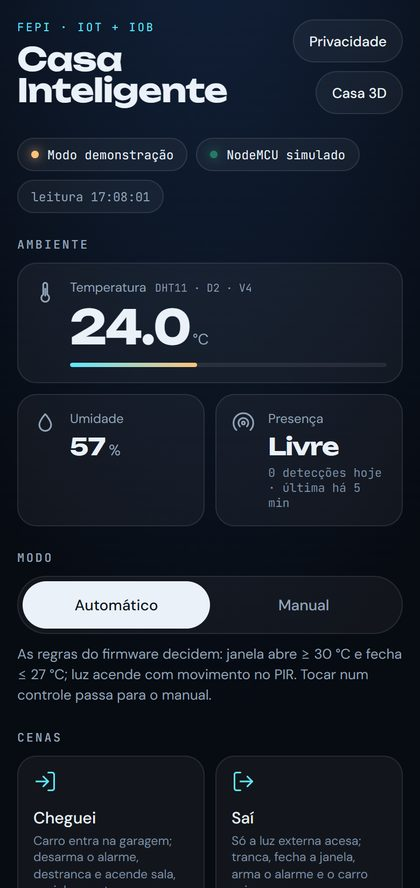
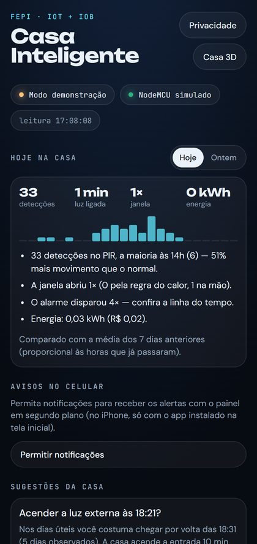
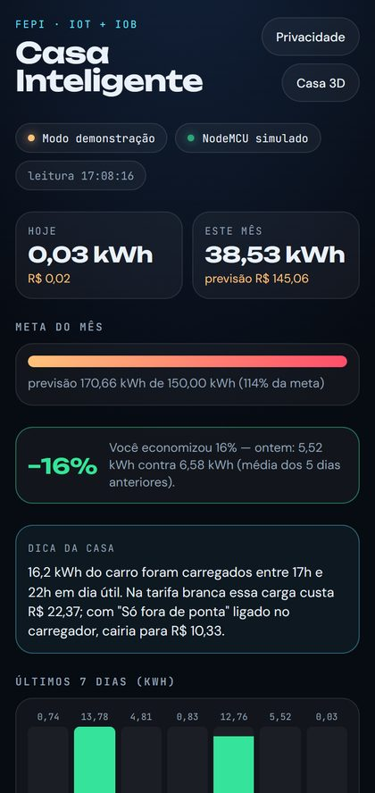

D5 PIR → D1 LED · V11 V0
Iluminação
SE presença E modo automático
ENTÃO acende o D1 e a casa 3D
O PIR sozinho só diz que houve movimento; a regra transforma isso em ação.
FEPI · Internet das Coisas e do Comportamento · 2026
O NodeMCU ESP8266 lê os sensores e decide; o Blynk leva o dado; a casa 3D mostra; o aplicativo aprende a rotina. Tudo sincronizado, nos dois sentidos.
Por dentro da placa
Passe o mouse numa peça para ver o pino, o datastream e o que ela faz na casa.
Wi-Fi · API do Blynk · SSE
A placa decide primeiro, sem esperar a nuvem. Depois o dado sobe para o Blynk e chega à casa 3D e ao celular. Os comandos fazem o caminho de volta — e só valem no modo manual, para não brigar com as regras da placa.
Percepção
Variação de infravermelho no HC-SR501, pino D5.
instantâneoDecisão
A regra da luz roda no loop do firmware, sem esperar a nuvem.
LED D1 acende jáNuvem
A placa publica V11 e V0 só quando o valor muda.
Wi-FiPonte
Consulta a API do Blynk e grava o evento no Postgres.
leitura rápida do V11Gêmeo digital
Recebe por SSE e acende as luzes da cena.
~0,3 s no totalIoB
O evento entra na linha do tempo e na rotina aprendida.
históricoD0 – D8 · V0 – V18
| PINO | COMPONENTE | DATASTREAM | NA CASA 3D | NA MONTAGEM |
|---|---|---|---|---|
| D0 | LED da porta | V1 | Porta e fechadura | ativo |
| D1 | LED da iluminação | V0 | Luzes internas, jardim e piscina | ativo |
| D2 | DHT11 | V4 · V5 | Tela da sala e painel | ativo |
| D5 | PIR HC-SR501 | V11 · V14 | Cone de detecção na entrada | ativo |
| D6 | Botão do alarme | V9 | Alarme armado / desarmado | ativo |
| D7 | Servo SG90 | V2 · V7 | Janelas virtuais | ativo |
| D8 | Buzzer | V8 | Sirene na cobertura e no jardim | ativo |
| A0 | LDR | V6 · V10 | Dia e noite | desligado (flag) |
| D4 | HC-SR04 | V12 | Distância do carro na garagem | desligado (flag) |
GND comum em tudo; LEDs com resistor de 220 Ω. LDR e HC-SR04 saíram da montagem e ficam desligados por configuração no firmware (USAR_LDR e USAR_HCSR04); religam trocando um 0 por 1.
D2 · D5 · D6 · D1 · D7 · D8
As regras rodam no firmware, a cada volta do loop. Sem internet, a casa continua acendendo a luz e disparando o alarme.
D5 PIR → D1 LED · V11 V0
SE presença E modo automático
ENTÃO acende o D1 e a casa 3D
O PIR sozinho só diz que houve movimento; a regra transforma isso em ação.
D6 / V9 + D5 → D8 · V8
SE alarme armado E presença
ENTÃO sirene por 4 s + alerta no celular
Presença só vira intervenção quando o usuário mostrou a intenção de proteger a casa.
D2 DHT11 → D7 servo · V4 V7
Entre 30 °C e 27 °C a janela fica como está: sem servo tremendo perto de um único valor.
// casa_inteligente.ino — a luz só muda quando o estado desejado é outro
void atualizarLuzAutomatica() {
if (!modoAutomatico) return;
bool desejada = presenca; // USAR_LDR 0: só a presença
if (desejada != luzLigada) controlarLuz(desejada);
}Blynk Cloud · datastreams
O Blynk é a camada de nuvem: guarda o estado atual, mostra o painel e leva os comandos. A placa só publica quando o valor muda, para caber no plano gratuito, e reconecta sem travar as regras locais.
No automático, a placa manda nos atuadores. No manual, passam os comandos do Blynk, da casa 3D e do celular. Assim usuário e regra nunca disputam o mesmo LED.
Gêmeo digital · three.js
Um LED de 5 mm vira a casa inteira acesa. Sem a placa, a casa roda as mesmas regras com sensores simulados — o plano B da apresentação.



Histórico · Postgres · painel no celular
A IoT coleta e transporta o dado; a IoB dá sentido a ele. Cada leitura do PIR e do DHT11 e cada comando viram histórico, comparação com os dias anteriores e sugestões — que só viram automação com um toque do usuário. Regras e médias, sem aprendizado de máquina.
PIR · V11
Horários de saída e chegada pelo maior intervalo sem presença.
PIR · V11
Simula as luzes no padrão de cada hora com a casa vazia.
DHT11 · V2 · V17
Limites de abrir e fechar aprendidos dos ajustes manuais.
V0 · V20–V23
Tempo de luz ligada vira kWh por cômodo e custo.
todos
Comparação com a média dos 7 dias anteriores.
V1 · V8 · V11
Porta aberta, invasão, calor com janela fechada, placa offline.
Extras: carro elétrico com carregador virtual (V18) no consumo e na tarifa branca; cenas de um toque — Cheguei, Saí, Dormir.



LGPD · Lei 13.709/2018
Horários de presença revelam quando a casa está vazia. Por isso o usuário vê tudo o que é guardado e decide o que acontece com isso.
Guarda
Nunca guarda
consentimento · pausar coleta · retenção 7/30/90 dias · exportar JSON · apagar tudo
O que ainda não faz
→ Trocar por DHT22 ou BME280
→ Somar sensor de abertura de porta
→ Fonte externa de 5 V com GND comum
→ Observar mais tempo e validar os padrões